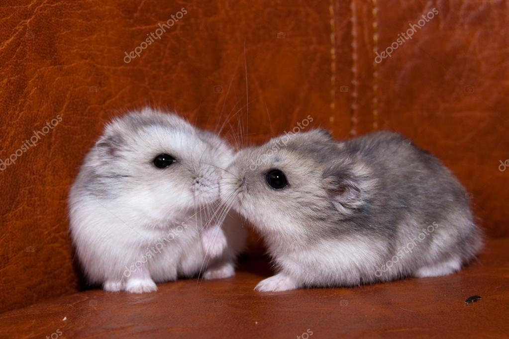

Dong Tran
Aspiring Coder, Future Millionaire, Entrepreneur, and Food Lover
I am on a journey to learn and master coding starting off with Web Development with intent of making contributions to the ever evolving technological world. With the end goal of creating enough cashflow to invest and generate multiple streams of passive incomes to obtain a multi-millionaire status. With freedom of time and control of money I can start up businesses to provide opportunities for the working class and give back to society through philanthropy! Aside from this, I love eating all kinds of different foods from many different cultures. Nothing beats a delicious meal with warm and loving company!
Books and Education
Work Experience
| Dates |
Work |
| 2005 - 2010 |
Lucky's Gifts |
| 2012 - 2018 |
World Financial Group |
Skills
| Communication |
⭐️⭐️⭐️⭐️⭐️ |
| Emotional Intellegence |
⭐️⭐️⭐️⭐️⭐️ |
| Eating |
⭐️⭐️⭐️⭐️⭐️ |
|
| Phone Etiquette |
⭐️⭐️⭐️⭐️⭐️ |
| Leadership |
⭐️⭐️⭐️⭐️⭐️ |
| Drinking Coffee |
⭐️⭐️⭐️⭐️⭐️ |
|
My Hobbies
Contact Me
{kind=link}
{kind=link}
{kind=link}
{kind=link}
{kind=link}
{kind=link}
{kind=link}